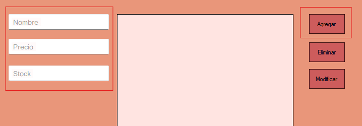
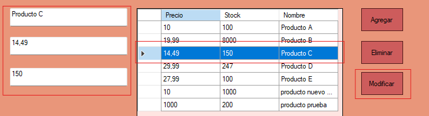
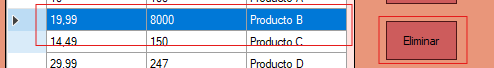

Ayuda: Gestion de Productos
La pantalla de Gestion de Productos permite al usuario agregar, modificar o eliminar productos del sistema.
Guia paso a paso
Siga estos pasos para agregar un nuevo producto:
- Complete los datos requeridos en el formulario que aparece.
- Nombre
- Precio
- Stock inicial
- Haga clic en "Cargar" para registrar un nuevo producto.

Siga estos pasos para modificar producto:
- Seleccionar un producto del DataGridView.
- Modificar cualquier parametro del mismo
- Haga clic en "Modificar" para modificar un producto.

Siga estos pasos para eliminar un producto:
- Seleccionar un producto del DataGridView.
- Modificar cualquier parametro del mismo
- Haga clic en "Eliminar" para borrar un producto.

Notas adicionales
Recuerde que solo los usuarios con permisos adecuados pueden gestionar algunas acciones.